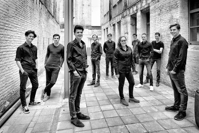

vrijdag
19:00-21:00
VUIST
Wanneer niemand het je geeft, moet je het zelf halen, toch? Je strijdt om je plek te bemachtigen en je stempel te drukken. Om te claimen wat van jou is, met jouw stem, jouw geluid. En ja, het is een lange weg. Het is een pad dat je bewandelt waarin pieken en dalen elkaar afwisselen als dag en nacht. Je komt van ver.


zaterdag
20:00-21:30
Blunt Axe
Deze manisch, allitererende, ratelende, declamerende, bezeten, taalkunstenaar belichaamt de ware freak in ons. ACG Vianen (1972) neemt je mee in zijn bizarre wereld en doet niet aan kontlikkerij. Met zijn band zet hij een performance neer waar je je knokkelige vingers bij af kan likken.



zaterdag
20:30-21:30
JazzAcademy
JazzAcademy is zeven jaar geleden opgezet door de Bossche trompettist Jeroen Doomernik vanuit de stichting Jazzwerkplaats. Veel jonge muzikanten hebben in de JazzAcademy al de kans gekregen om zich verder te ontwikkelen en een aantal heeft hierdoor stappen kunnen maken op weg naar het conservatorium.


zaterdag
21:10-21:50
Clittenband
Altijd al gedroomd van een trio? Droom niet verder, want Clittenband komt en staat voor je klaar! In hun Nederlandstalige grootkunst wordt politiek poëtiek en lavendel erotiek. Het trio speelde vorig jaar ook op RAUWKOST, maar dit jaar organiseren ze een complete festivallocatie in de kerkers van Willem Twee: CLIT CITY.


zaterdag
22:00-23:00
VOJAK
VOJAK is een Rotterdamse avant-groove band en staat voor een originele mengelmoes van stijlen; experimentele electronica, 70's funk, alternatieve hiphop, Drum&Bass en meer vermengen ze tot een geheel authentieke sound. Het woord Vojak is Slovaaks (afkomst van Toetsenist Tommy van Leuken) voor strijder.

zaterdag
22:30-23:45